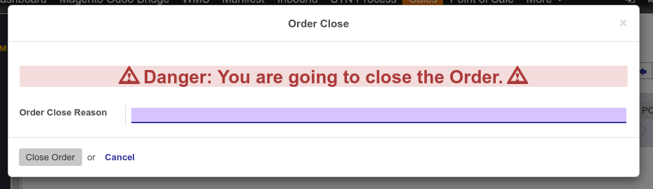

This module will help to close sales orders which are not draft, not done or not cancelled. The user can close the order any time except these three types of sales orders.
Features:
- Close sales order with proper reason.
- Reserved quantity of product will be released and stock into the inventory.
- Stock picking line will be canceled.
- Partially delivered orders also can be close, safely.
